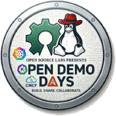

Saltar al contenido
☰

Open Demo Days
OPEN-INDUSTRIES × OPENDEMODAYS
OpenShift Automation Framework Workshop
Presentación
Material
🇺🇸 English
🇪🇸 Español
🇵🇹 Português
🇩🇪 Deutsch
Repositorio
⌂
Workshop
/
Inicio y edición